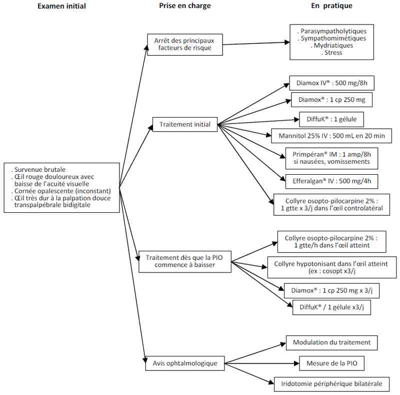

Glaucome aigu
AdulteSpécialité : ophtalmologie /
Points importants
- Oeil rouge, très douloureux, avec baisse d'acuité visuelle
- Survenue brutale
- Palpation bidigitale = consistance d'une « bille de verre »
- Physiopathologie : augmentation brutale de la pression intraoculaire par blocage des voies d'élimination extraoculaire de l'humeur aqueuse (fermeture de l'angle iridocornéen, bloc pupillaire)
- Traitement par acétazolamide (Diamox) systémique, antiémétique puis myotiques locaux
- Assurer le traitement préventif de l'oeil controlatéral
- Contre-indiquer les médicaments à effets anti-cholinergique et/ou mydriatique jusqu'à la réalisation d'une iridotomie périphérique
Présentation clinique / CIMU
SIGNES FONCTIONNELS
Généraux
- Céphalées
- Nausées, vomissements
Association évocatrice de survenue brutale
- Oeil très douloureux, blépharospasme, larmoiement
- Oeil rouge : conjonctive hyperhémiée, cornée opalescente « glauque » (=> glaucome)
- Oeil dur comme une « bille de verre »
- Baisse de l'acuité visuelle
- En règle unilatéral, peut se bilatéraliser secondairement
CONTEXTE
Terrain
- Femme, après la quarantaine
- Homme avec obstruction urétro-prostatique traitée
Facteurs déclenchants
- Prise de substance à propriétés anticholinergiques
- Exposition à l'obscurité
- Stress aigu
EXAMEN CLINIQUE
- Palpation bidigitale oculaire douce (douloureuse) à paupière fermée
-
Examen oculaire :
- baisse de l'acuité, conjonctive hyperhémiée, cornée opalescente
- illumination pupillaire monoculaire : semi-mydriase aréflexique
EXAMENS PARACLINIQUES SIMPLES
- ECG préthérapeutique (absence de trouble du rythme cardiaque avant administration d'acétazolamide [diurétique proximal, déplétion potassique])
CIMU
-
Tri 2
Signes paracliniques
BIOLOGIQUE
Ionogramme sanguin
- Vérification d'une kaliémie normale avant administration d'acétazolamide (diurétique proximal, déplétion potassique)
- Evaluation de la fonction rénale préthérapeutique
Diagnostic étiologique
- Blocage pupillaire (augmentation brutale de la pression intraoculaire par blocage des voies d'élimination extraoculaire de l'humeur aqueuse [fermeture de l'angle iridocornéen])
-
Oeil de conformation courte : hypermétropie
Diagnostic différentiel
- Autre cause d'oeil rouge et douloureux
Traitement
TRAITEMENT EXTRAHOSPITALIER / INTRAHOSPITALIER
- Arrêt des anti-cholinergiques ou mydriatiques
-
Hypotonisant parentéral :
- première intention : diurétique inhibiteur de l'anhydrase carbonique + supplément potassique
- si échec : soluté hyperosmotique
- Antalgiques de classe II
- Anti-émétique
- Ambiance calme
- Collyres hypotonisants
- Collyre myotique local dans l'oeil contro-latéral immédiatement
- Collyre myotique local dans l'oeil atteint secondairement quand la pression intraoculaire baisse sous l'action des traitements précédents
MEDICAMENTS
- Diurétique inhibiteur de l'anhydrase carbonique : acétazolamide (Diamox), 1 amp 500 mg IV directe puis 1cp 250 mg / 8h à débuter au moment de l'injection
- Supplément potassique : DiffuK, 1 gel x3/j
- Métoclopramide (Primpéran) IM : 1 ampoule/8h si nausées/vomissements
- Paracétamol (Efferalgan) IV : 500 mg/4h
-
Collyre isopto-pilocarpine 2% :
- une goutte x 3/j dans l'oeil controlatéral
- une goutte/h dans l'oeil atteint
-
Collyre timolol-dorzolamide (Cosopt) : une goutte x3/j
Surveillance
CLINIQUE
- Baisse de la douleur
- Disparition des nausées
- Amélioration de la transparence cornéenne et de l'acuité visuelle
PARACLINIQUE
-
Contrôle de la kaliémie, 4 heures après la première administration d'acétazolamide
Devenir / orientation
CRITERES D'ADMISSION
- Service d'hospitalisation ophtalmologique si persistance de l'hypertonie après la première injection d'acétazolamide (Diamox), surveillance horaire de l'évolution sous traitement
CRITERES DE SORTIE
- Baisse significative de la douleur, disparition des nausées et vomissements
- Baisse de l'hypertonie oculaire au bout de 1 heure
- A condition d'une prise en charge ophtalmologique en urgence
ORDONNANCE DE SORTIE
Durée du traitement : jusqu'à la consultation en urgence d'un ophtalmologiste qui pratiquera une iridotomie bilatérale
- Acétazolamide (Diamox) cp: 250 mg x3/j
- DiffuK gélules : 1 gel x3/j
- Métoclopramide (Primpéran) IM : 1 ampoule/8h si nausées/vomissements
- Paracétamol (Efferalgan) IV : 500 mg/4h
-
Collyre isopto-pilocarpine 2% :
- une goutte x 3/j dans l'oeil controlatéral
- une goutte /h dans l'oeil atteint
- Collyre timolol-dorzolamide (Cosopt) : une goutte x3/j
RECOMMANDATIONS DE SORTIE
- Avis ophtalmologique en urgence
- Rester au le calme, éviter tout stress
- Arrêter les médicaments à effet anti-cholinergique
Mécanisme / description
- L'humeur aqueuse est produite dans l'oeil en permanence par les procès ciliaires et doit être évacuée hors de l'oeil en quantité équivalente, à travers le trabéculum situé à l'angle irido-cornéen
- Quand l'angle iridocornéen se ferme (mydriase sur chambre antérieure étroite, poussée de l'iris vers l'avant par le cristallin), l'humeur acqueuse n'est plus évacuée hors de l'oeil et la pression intraoculaire augmente en quelques minutes, de manière importante
- Une augmentation brutale de la pression intraoculaire crée un oedème cornéen, sidère de sphincter irien et exerce une pression dangereuse sur la rétine et le nerf optique
- Les diurétiques inhibiteurs de l'anhydrase carbonique et les agents hyperosmotiques augmentent la filtration extraoculaire de l'humeur acqueuse
- Les myotiques maintiennent l'angle irido-cornéen ouvert dès que le sphincter irien est à nouveau fonctionnel après une baisse de la pression intraoculaire
Algorithme
- Algorithme : glaucome aigu à angle fermé
 _74 Algorithme Algorithme : glaucome aigu à angle fermé
Bibliographie
- Collège des Ophtalmologistes Universitaires de France. Polycopié National. Glaucome aigu par fermeture de l'angle. 2008-2009, chap 16, pp122-123
Auteur(s) : Jean-Louis BOURGES